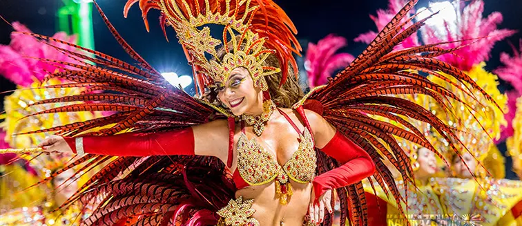

El término Argentina proviene del latín argentum, que significa plata. Es un país que limita al norte con las Repúblicas de Bolivia y del Paraguay; al sur con la República de Chile y Océano Atlántico; al este con la República Federativa del Brasil, República Oriental del Uruguay y el Océano Atlántico; y al oeste con la República de Chile. Con una superficie de 2.780.000Km², Argentina es el octavo país mas grande del mundo.

En 1536, Pedro de Mendoza fundó la ciudad de Santa María de los Buenos Ayres, aunque la primera población no prosperó. Buenos Aires es única, pues fue fundada dos veces: su segunda fundación ocurrió en 1580, estableciendo una ciudad clave para el Virreinato de Perú y, posteriormente, para el Virreinato del Río de la Plata.
La conmemoración de la Revolución de Mayo es muy importante para todos los argentinos y las argentinas. Se recuerda la formación del Primer Gobierno Patrio, a partir del despido del virrey español, y el inicio del camino hacia la independencia. La Revolución de Mayo fue un proceso revolucionario que comenzó en Buenos Aires en mayo de 1810 y culminó con la destitución del virrey español y la formación de una Junta de Gobierno local. Este evento fue clave en el inicio del camino hacia la independencia de Argentina.
Cuando España fue ocupada por Francia, el Virreinato del Río de la Plata comenzó a buscar su independencia. En 1810, se convocó un consejo abierto el 25 de mayo, y el 9 de julio de 1816, en Tucumán, se proclamó la independencia de Argentina. El 9 de julio de 1816, el Congreso de Tucumán, integrado por representantes de las Provincias Unidas del Río de la Plata, declaró la Independencia. Ese día, las manifestaciones populares se concentraron en los alrededores de la Casa de Tucumán coreando “Viva la Patria”. La sesión se extendió hasta altas horas de la noche, por lo que los festejos se llevaron a cabo al día siguiente. Este hecho histórico determinó la ruptura definitiva de la dependencia política a la corona española completando así el proceso revolucionario que comenzó el 25 de mayo de 1810. Tras la independencia, surgieron dos movimientos políticos: los unitarios y los federales. Esta división llevó a enfrentamientos durante décadas. En 1829,Juan Manuel de Rosas asumió el poder en Buenos Aires, y su gobierno autoritario impulsó el comercio. Finalmente, en 1852, Rosas fue derrotado, lo cual permitió la creación de una Constitución Nacional en 1853.
En palabras de Alejandro Grimson, el peronismo es un movimiento, es un partido, es un sentimiento. Es de derecha y es de izquierda. Es contradictorio y, para algunos, incomprensible. Y tiene tantos seguidores como detractores. “Es la identidad política popular más persistente de Argentina”.
El peronismo surgió en la década de 1940 alrededor del entonces coronel Juan Domingo Perón, un militar y funcionario en ascenso de la dictadura iniciada en 1943 (dirigida por los presidentes de facto Pedro Ramírez y luego Edelmiro Farrell). En 1945 Perón fue encarcelado por el propio gobierno al que pertenecía, y el 17 de octubre de ese año miles de sus seguidores, trabajadores conocidos como “descamisados”, se movilizaron pidiendo su libertad. Se considera a este momento como el nacimiento del peronismo, y los peronistas aún celebran cada 17 de octubre como el “Día de la Lealtad”. En el siglo XX, argentina estuvo marcado por golpes de estado y períodos de inestabilidad. En total hubo seis golpes exitosos que establecieron dictaduras militares en 1930, 1943, 1955, 1962, 1966 y 1976. Este período oscuro estuvo caracterizado por violaciones de derechos humanos y la desaparición de miles de personas. En 1982, Argentina reclamó las Islas Malvinas, resultando en una guerra con Inglaterra que terminó en derrota.
Los cambios de Gobierno reflejaban la disputa entre un modelo proteccionista y nacionalista y otro enfocado en recuperar el libre comercio y las importaciones. Las consecuencias hicieron de Argentina un país poco fiable que ahuyentaba la inversión extranjera.
Argentina es un país muy amplio y diverso con tradiciones y festividades que varían según la región geográfica. Muchas de las costumbres tienen su origen en las tradiciones propias de los habitantes nativos de América, y muchas otras se dieron por la fusión multicultural producida por los inmigrantes que llegaron al país en los siglos XIX y XX provenientes, principalmente, de Italia y España.
La religión que profesa la mayoría de los habitantes de Argentina es el catolicismo. Sin embargo, reina en el país la libertad de culto, por lo que se profesan otras religiones como el judaísmo y el protestantismo, entre otras. La mayoría de la población argentina habla español, sin embargo, una porción de los habitantes utiliza los idiomas americanos nativos como el quechua, el mapuche, el aimara y el guaraní, entre otros.
Algunos géneros musicales representativos son el tango. la chacarera, el chamamé, el carnavalito, el cuarteto, la milonga, la zamba, la cumbia santafesina, entre otras. Muchos de estos géneros tienen también sus propias danzas, como el chamamé, el tango y el malambo. El tango es en baile más icónico de Argentina. Este atractivo ritmo del arrabal, nacido en las pulperías de San Telmo y La Boca en el siglo XIX, es uno de los emblemas musicales de Argentina. Tuvo su época dorada a lo largo del siglo XX, logrando cautivar al público mundial a través de importantes orquestas y conquistando las pistas de baile europeas con el ritmo del dos por cuatro.
Se conoce como “milonga” a los lugares donde se puede ver y bailar tango en Buenos Aires, esta palabra ya denominaba a un baile folclórico rioplatense que aportó mucho al tango. Este ritmo de origen rural era muy popular en Argentina y Uruguay, presentando influencias africanas y otras provenientes de las danzas criollas y europeas que se bailaban en Buenos Aires y Montevideo. Gracias a su parentesco con el tango, muchas de las funciones de tango en vivo también ofrecen espectáculos al ritmo de la milonga.
Por otro lado, la cumbia también es uno de los más importantes entre la música típica de Argentina. Este ritmo popular proveniente de Centroamérica y el Caribe llegó a la ciudad para quedarse y poner a bailar a los porteños a su ritmo. Desde su llegada logró fusionarse y transformarse incorporando sonidos locales y creando géneros tan diversos como la reconocida “cumbia villera”. La cumbia es tan popular en Buenos Aires que la puedes escuchar y bailar en muchos boliches de la ciudad en barrios como Palermo, Recoleta o San Telmo. También encuentras orquestas y coloridos espectáculos en vivo en los centros culturales del barrio Almagro que te harán exclamar: ¡aguante la cumbia, loco!
La gastronomía argentina es un espejo de su rica historia cultural, reflejando la diversidad y riqueza de un país que ha sabido fusionar las tradiciones indígenas con las influencias europeas.La cocina argentina tiene sus raíces en la mezcla de culturas que han habitado el país a lo largo de los siglos. Desde los pueblos indígenas, que supieron aprovechar los recursos naturales ofrecidos por la vasta geografía argentina, hasta la masiva ola de inmigrantes europeos que llegaron al país entre los siglos XIX y XX, cada grupo ha dejado su huella en lo que hoy conocemos como la gastronomía argentina. Los indígenas introdujeron técnicas como el asado, cocinando la carne en una parrilla sobre un fuego abierto, mientras que los españoles y italianos aportaron sus tradiciones culinarias, incluyendo el uso de carnes, pastas y pizzas, así como diversos tipos de dulces y postres.
El asado no es solo un plato, sino una institución en Argentina. Es sinónimo de reunión familiar y de amigos, de celebración y de compartir. La carne, que es de una calidad excepcional gracias a las extensas pampas argentinas, se cocina lentamente a la parrilla, logrando una textura tierna y un sabor incomparable. Más que una técnica de cocción, el asado es un arte que se transmite de generación en generación, con cada maestro asador teniendo sus propios secretos y preferencias.
Las empanadas son otro clásico de la cocina argentina, con cada región del país teniendo su propia versión. Desde las empanadas jujeñas, rellenas de carne cortada a cuchillo y condimentadas con un toque picante, hasta las empanadas tucumanas, conocidas por su jugoso relleno, estas pequeñas delicias encapsulan la diversidad culinaria del país.

El dulce de leche es, quizás, el postre más icónico de Argentina. Esta crema de leche caramelizada se encuentra en el corazón de muchos postres argentinos, desde alfajores hasta tortas y helados. Su sabor dulce y su textura cremosa lo han convertido en un favorito tanto a nivel local como internacional.
Este es otro clásico argentino y como su nombre bien lo indica, está compuesto por un tipo pan baguette corto con un chorizo asado a la parrilla y aderezado con chimichurri, la salsa infaltable en la mesa argentina la cual se elabora con perejil, ajo, orégano, aceite de oliva, vinagre y unas cuantas hojuelas de chile seco. Es un plato originario en la región del Río de la Plata fue creado por los gauchos que vivían en las zonas rurales y preparaban choripanes cuando hacían asados para celebrar algún evento.
La provoleta es un infaltable en los asados argentinos, que se acostumbra a servir como entrada o acompañamiento. La provoleta es un queso provolone de origen italiano el cual se cocina en el asador o al horno quedando crujiente por fuera y blando y caramelizado por dentro al que se le añaden condimentos como orégano, ajo, chile, perejil y en algunas ocasiones un poco de aceite de oliva con el famoso chimichurri.
En Argentina muchas personas planifican sus viajes, escapadas o festejos. Es que se trata de una época del año en la que el calor y las vacaciones invitan a distraerse. Afortunadamente, Argentina tiene opciones de sobra para hacerlo. Una de ellas, sin dudas, tiene que ver con las fiestas tradicionales que se llevan a cabo en distintas provincias.
Llamada “We Xipantu” o “Nquillatún” en mapuche, que significa Año Nuevo, esta tradición milenaria se celebra en el sur de Argentina, en la región de la Patagonia, y en muchos de los pueblos de Chile. En ella se da la bienvenida a un nuevo año según los movimientos del sol y de los astros con una gran fiesta repleta de ruegos y agradecimiento
El Carnaval de la Quebrada de Humahuaca es uno de los más populares de Argentina. Una mezcla entre las tradiciones impuestas durante la colonización española y las originarias de los indígenas de la zona, la mayoría vinculadas con la tierra (Pachamama). Durante el primer día, las comparsas acuden al monte para desenterrar al diablo, una figura clave en estas fiestas que se vuelve a enterrar al terminar el Carnaval. La música y los bailes se prolongan durante toda la noche.
Cada 21 de junio se celebra en Ushuaia, en la Tierra del fuego, una fiesta dirigida al solsticio de invierno en el hemisferio sur. Esto significa que se está ante la noche más larga del año y, por lo tanto, el día es más corto. Por esa zona anochece sobre las 17h. Desde la puesta de sol se organizan diferentes espectáculos y eventos en los diferentes centros culturales de la región. También hay música y fiesta y, alrededor de la bahía Encerrada, se pueden ver caminantes con antorchas que van iluminando el camino. La noche culmina con fuegos artificiales.
El asado es una de las especialidades gastronómicas de Argentina. En la localidad de Cholila, en la Patagonia argentina, tiene tanta relevancia que hasta le han dedicado una fiesta nacional. Durante tres días, los asistentes pueden disfrutar de más de 150 asadores donde se asan unos 10.000 kilos de carne de vaca, 400 chorizos y 300 corderos. Además de ser un homenaje a lo mejor de su gastronomía, esta gran fiesta campera también cuenta con espectáculos, hay música en vivo, se elige a la reina de las fiestas y se organiza un importante sorteo.
Lollapalooza es uno de los festivales de música mas importantes de Argentina. Se celebra en el hipódromo de San Isidro, en las inmediaciones de Buenos Aires, donde durante dos días se puede disfrutar de artistas de carácter internacional. Entre los grupos que han tocado en sus escenarios están The Kooks, Vampire Weekend, Arcade Fire, The Strokes y Metallica, entre otros.
La flora y fauna de Argentina son increíblemente diversas debido a su extenso territorio y variedad de ecosistemas. En cuanto a la flora, se destacan árboles como el algarrobo, el quebracho, el lapacho y el ceibo (flor nacional), así como especies arbustivas y herbáceas en diferentes regiones. La fauna incluye mamíferos como el puma, el guanaco, el huemul y el yaguareté, aves como el cóndor, el flamenco y el hornero, y una gran variedad de reptiles, anfibios e insectos. La flora y fauna argentinas están compuestas por especies de 18 ecorregiones diferentes donde se desarrollan unos 115 ecosistemas distintos, por lo que en el territorio argentino se puede encontrar una gran biodiversidad. La gran variabilidad de climas que presenta esta zona influye en la gran biodiversidad que la caracteriza: en el norte del país se dan climas tropicales y subtropicales, en el centro y sur se desarrolla un clima templado y el extremo sur está representado por un clima frío, así que los animales y las plantas que hay son muy variados.
Gracias a la gran variedad de ecosistemas que se encuentran y los diferentes climas que caracterizan a este territorio, se pueden encontrar más de 10.000 especies de plantas. Respecto a la fauna, esta también es muy variada, pudiéndose encontrar aproximadamente; 386 especies de mamíferos, 297 de reptiles, 710 de peces y 156 de anfibios. Además, añadir que también se pueden encontrar unas 300 especies de plantas exóticas y unas 50 especies de animales exóticos.
Los ríos de Argentina están profundamente marcados por el inconfundible territorio y relieve del país. De hecho, la hidrografía de Argentina convierte a este país latinoamericano en un lugar único digno de navegar. Tal es la riqueza hídrica de Argentina que entre sus ríos encontramos el río más ancho del mundo y alguno de los más caudalosos. Además, Argentina forma parte de la cuenca del Plata, la cuenca hidrográfica del Río de la Plata, que drena gran parte de América del Sur. Más concretamente, el Río de la Plata junto con sus afluentes aporta sus aguas a los cuatro países que hacen límite con Argentina: Brasil, Paraguay, Uruguay y Bolivia.
Las montañas constituyen un ecosistema frágil que ocupa un 22 % de la superficie terrestre y alberga un 13 % de la población mundial. Los procesos naturales de la Tierra y el cambio climático afectan estas regiones, como así también las costumbres y supervivencia de sus habitantes. En Argentina, las regiones montañosas ocupan alrededor de un tercio de su territorio y los habitantes de estas regiones rurales conviven con peligros naturales y antrópicos que modifican su entorno permanentemente. En Argentina, se encuentra la cordillera continental más larga de la Tierra. Ocupa la zona occidental de América del Sur, bordeando toda su costa en el océano Pacífico. En total, tiene una longitud de 8.500 kilómetros. Atraviesa Argentina, pero también Chile, Bolivia, Perú, Ecuador, Colombia y el occidente de Venezuela. La Cordillera de los Andes, dentro del territorio argentino, ofrece lugares bellísimos y de todo tipo de climas. La parte argentina de la cadena es de unos 3.500 kilómetros y, en algunos lugares, roza los 7.000 metros de altura, mientras que, en otros, se sumerge en el mar.